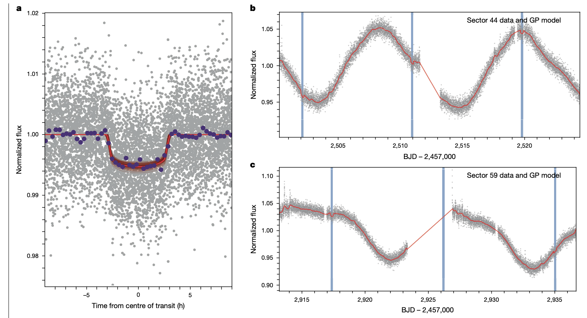
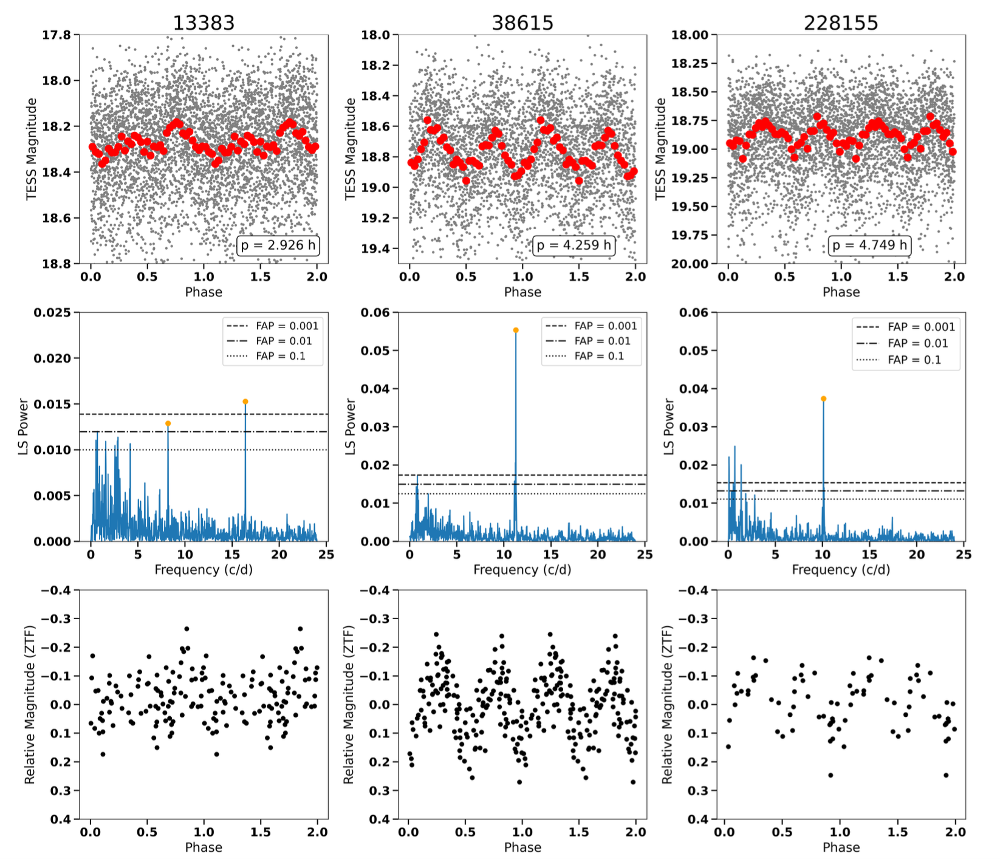
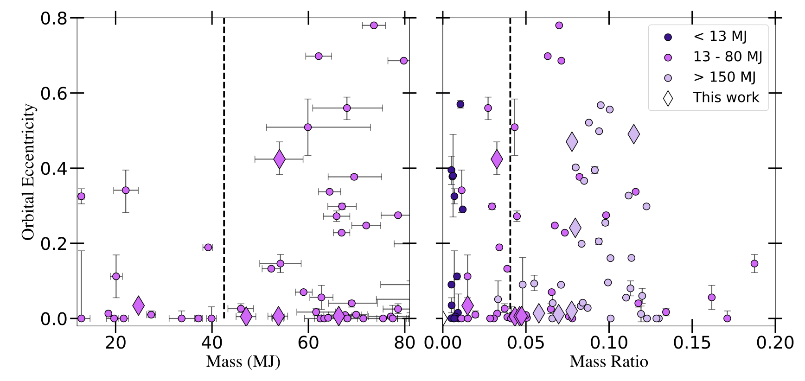

Welcome TESS followers to our latest news bulletin!
This week, we are looking at three recent papers from the archive. Enjoy!
A giant planet transiting a 3-Myr protostar with a misaligned disk (Barber et al. 2024) :
Young planets provide a deeper understanding of the formation and early evolution of planetary systems. These nascent worlds also help test and refine theoretical models of star-planet interactions, and offer new insights into the processes that shape the potential for supporting life. Barber et al. (2024) report the discovery of the youngest known transiting exoplanet, IRAS 04125+2902 b, orbiting a ~3-million-year-old star in the Taurus Molecular Cloud. The target was observed by TESS in Sectors 19 (at long cadence), 43, 44, 59, 71, and 72 (at short cadence), and produced a total of 17 transits. The host is a TTauri star and a part of the D4-North subpopulation, has a mass of 0.7 MSun, a transitional disk at an inclination of about 30 degrees, and a resolved binary companion at a projected separation of ~635 AU. To confirm and model the system, and rule out potential false positives, the authors combined TESS data with ground-based transit observations, radial velocity measurements from multiple instruments, and high-resolution imaging. Their analysis demonstrates that the planet has a radius of ~10.7 REarth, an orbital period of 8.83 days, and a mass less than 90 MEarth (at 95% confidence). The results of Barber et al. (2024) show that the planet's orbit aligns with both the star's rotation (consistent with a period of ~11.3 days), and the binary companion's edge-on orbit (94.5°). Additionally, the authors find that the star shows evidence of weak accretion with a rate of about 10-9 MSun per year, typical for transitional disks. Barber et al. (2024) also note that the system is an ideal target for future studies with the JWST and, given the planet's large radius but relatively low mass, it likely has an extended atmosphere, making it particularly suitable for atmospheric characterization. The authors also argue that the disk's calculated gas mass of (0.00318+/-0.0009 MSun, as derived from submillimeter observations) provides important constraints on the remaining material available for planet formation in this young system. Capitalizing on TESS observations, Barber et al. (2024) discover a new planet – IRAS 04125+2902 b – which is about three times younger than previously known transiting planets. This provides important new evidence that planets do form and migrate to close orbits within the first few million years of stellar formation.
Three fast-rotating Jovian Trojans identified by TESS set new population density limits (Kiss et al. 2024) :
As likely remnants of the early Solar system, Jovian Trojans provide valuable insights into the formation and evolution of our planetary neighborhood. Studying these objects constrains the initial configuration of the system, the migration of the giant planets, and the processes that shaped architecture we see today. Kiss et al. (2025) report the discovery of three of the fastest-rotating Jovian Trojans (rotation periods shorter than 4.8 hours): (13383), (38615) and (288155). TESS observed the targets across multiple sectors – Sector 29, 42, and 43 for (228155), Sector 43 for (38615), and Sector 44 for (13383) – and enabled robust detection of rotationally-modulated signatures for all three. To validate and confirm the measured rotation periods, the authors supplemented these observations with complementary data from the Zwicky Transient Facility (ZTF), which provided 90, 155, and 127 observations for asteroids (13383), (38615), and (228155) respectively, obtained between 2021 and 2024. Combining the available data, the authors demonstrate that (38615) and (288155) have rotation periods of 4.26 and 4.75 hours, respectively, which is below the typically-considered ~5 hours break-up limit for Jovian Trojans. Based on population-average average geometric albedo, the authors estimated that these two Trojans have diameters of ~16 km and ~15 km, respectively. Kiss et al. (2025) note that the rotational properties of (13383) are even more significant, where the measured period is just ~2.9 hours. They argue that such a rapid rotation implies a density of approximately 1.6 g/cm3, notably higher than the generally-accepted upper limit density for Jovian Trojans of about 1 g/cm3. The authors note that if this approximation is incorrect and the asteroid is in fact less dense, to maintain structural integrity its rapid rotation would require a quite considerable cohesion on the order of a few kilopascals. Kiss et al. (2025) measure a diameter of about 24.3 km for (13383), and point out that the combination of its relatively high albedo (pV ~ 0.11) and fast rotation could be the result of an energetic collision that both increased rotation rate and introduced relatively brighter surface material. Thanks to TESS, Kiss et al. (2025) identified the three faster-rotating Jovian Trojans in the size range of about 20 km, suggesting that some members of this population may have more complex evolutionary histories than previously thought.
11 New Transiting Brown Dwarfs and Very Low Mass Stars from TESS (Vowell et al. 2024) :
Studies of transiting brown dwarfs and very low mass stars help bridge the gap between stars and planets, in particular the “brown dwarf desert”, and shed new light on the formation and evolution of both stellar and planetary bodies. The estimated parameters of these systems help refine theories about the processes that govern the formation of objects across a wide range of masses. Vowell et al. (2025) report the TESS-enabled discovery and detailed analysis of 11 new transiting companions comprising 5 brown dwarfs and 6 very low mass stars. TESS observed the targets across multiple sectors between 2019 and 2024, both in short- and long-cadence mode, where transit-like signals were identified by previous efforts for 10 of the 11 targets. For the thorough characterization of each system, the authors augmented the TESS data with follow-up photometric measurements and high-resolution imaging through TFOP, as well as spectroscopic observations from TRES, which were all combined into global models. These provided the physical properties and orbital configurations of the corresponding system, confirming that the 11 targets range in mass between ~25 MJup and ~128 MJup , including three in the “driest brown dwarf desert” region. Vowell et al. (2025) combine the 11 systems with previous discoveries to further investigate the properties of said desert and raise challenges to previous studies. In particular, their analysis of the eccentricity vs mass distribution shows no discernible transition between planet-like and star-like formation around ~42 MJup . Neither do Vowell et al. (2025) find statistically-significant indications of such a transiting in the host star metallicity distributions. Additionally, the authors find that the TOI-5882 brown dwarf shows lithium absorption at 6708 Å despite the expected old age of the host star based on its rotation, kinematic and photometric properties, which they interpret as potential indication of planetary engulfment. Observations from TESS enabled Vowell et al. (2025) to perform a deep-dive analysis of more than 50 transiting brown dwarfs, allowing them to re-evaluate previous results and obtain new perspectives of these systems

Fig. 1: Taken from Barber et al. (2024). Left panel: phase-folded TESS lightcurve of IRAS 04125+2902, along with the best-fit transit model. Right panels: Sections of Sectors 44 and 59 highlighting the planet transits (vertical bands) and the corresponding model.

Fig. 2: Taken from Kiss et al. (2025). Upper panels: Phase-folded TESS lightcurves of the Jovian Trojans (13383), (38615) and (288155). Middle panels: corresponding power spectra. Lower panels: complementary ZTF observations.

Fig. 3: Taken from Vowell et al. (2024). Left panel: Eccentricity-mass distribution of transiting brown dwarfs. The vertical dashed line represents previously-suggested transition between planet-like and star-like brown dwarf formation. Right panel: same as left but showing the orbital eccentricity as a function of the mass ratio.